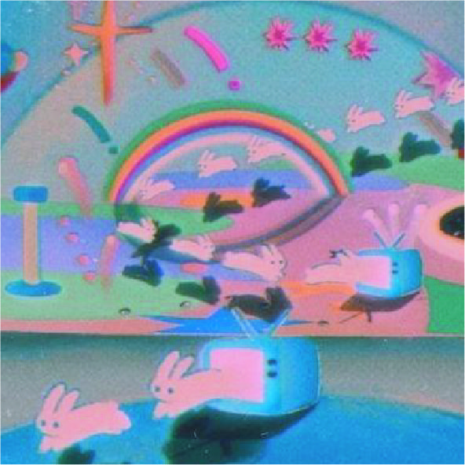
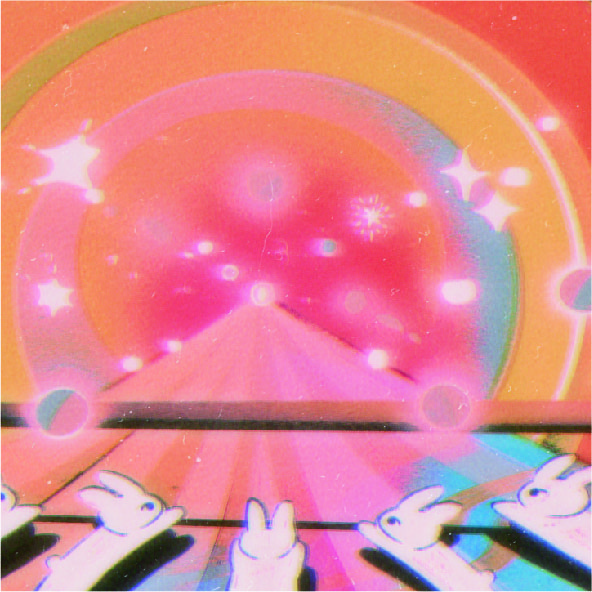

人類平均每晚有3-5個夢，有的人會高達20個。然而，大部分的夢都會立即或者在短時間內被遺忘掉。 隨著睡眠進入後半夜，夢會變得更長一些。在一個夜晚8小時的完整睡眠中，大部分的夢發生在通常為2小時的REM睡眠中。
在現代，夢被認為是與潛意識溝通的管道。夢的內容可能非常普通、正常，也可能極度超現實主義風格。夢可以有各 種不同的主題，包括恐懼、興奮、魔法、抑鬱、冒險，或者是性。夢中發生的事件並不受做夢者的控制，除非是處於清明夢 中，做夢者會擁有自我意識。有時候，夢會讓人產生創造力，或者給予人靈感。最著名的故事之一是德國化學家凱庫勒 宣稱夢見一條銜尾蛇，而悟出苯環的分子結構（但此說法遭到質疑）。 《莊子齊物論》中說到：「且有大覺，而後知此其大夢也。」這些意象從平常事物到超現實事物都有，所以有人說夢 是現實的反映，夢也是潛意識的投射。而從心理學的角度來看，夢是有意識看無意識的一扇窗子。 科學家發現，多數人的夢境存在著一些相似性，人們會經常夢到幾種類似的情節。多年以來，科學家試圖揭示這種當 人們醒來時轉眼即逝的神祕夢境狀態，試著尋找這種虛幻與現實之間的潛在聯繫。
多少恨，昨夜夢魂中。 還似舊時游上苑，車如流水馬如龍。 花月正春風.
弗洛伊德學派的觀點在１９世紀晚期，精神治療師西格蒙德·弗洛伊德發展出一套理論，認為夢是由無意識意願 的滿足所驅動的。弗洛伊德將夢稱為「通往無意識的大道」。他創建了「夢反映做夢者的無意識」理論，認為夢的內容是 由無意識欲望的滿足塑造的。他認為，重要的無意識欲望通常與童年時的記憶和經驗有關。弗洛伊德認為，夢境包含顯性 夢境（manifest dream-content）和隱性夢境（latent dream-content），隱性夢境和潛意識深處的願望或者幻想相關聯，而 顯性夢境流於表面，缺少意義。顯性夢境常常會掩蓋或者模糊隱性夢境。
